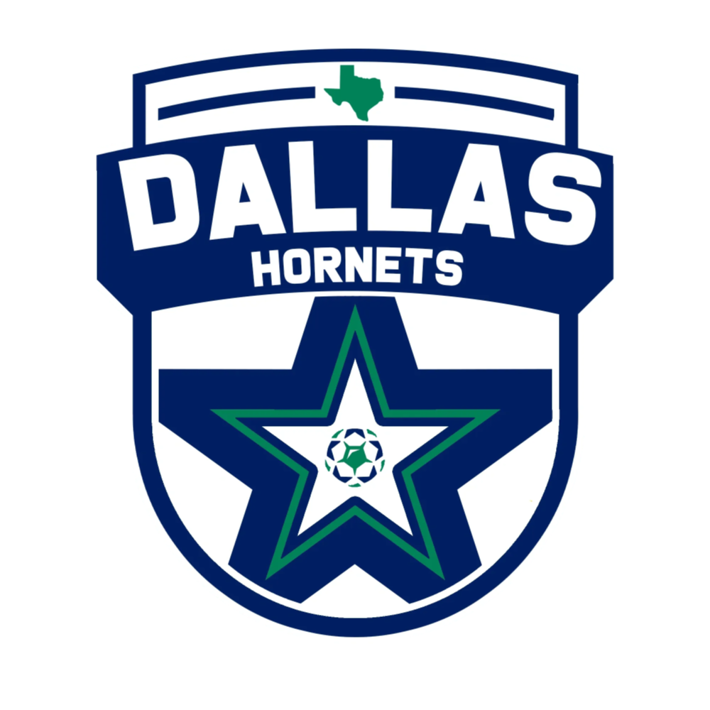

Dallas Hornets MLS NEXT (#77)Attacking Midfielder & Forward competing against older age brackets and now on the MLS NEXT pathway. Known for vision, high-press transitions, and clinical goal-scoring efficiency.
Coach: Kevin White • Primary Position: CAM / Winger / Forward
Joined the Dallas Hornets MLS NEXT Academy for the 2026–27 campaign — one step up the pathway from regional club soccer to the national MLS NEXT platform.
Coach: Matt Pitcock • ECNL RL NTX, NPL, FDL
Played up an age bracket with Sting 2012B and 2013B rosters, winning three tournament titles (U90C Dallas Open, Las Vegas Mayor's Cup, U90C Veterans Heroes Cup) and hitting his 100th career goal and 50th career assist in the same match.
Log condensed from tournament and league reporting; individual guest appearances and reserve-squad minutes are noted inline.
2025–2026 Soccer Highlights — Sting SC 2012B (Coach Pitcock)
Coach: Matt Pitcock • Four Squads Simultaneously
Standing 5'6" and 2013-born, Mitchell logged 90+ matches across four squads (2011B RPL, 2012B EA, 2013B Pre-ECNL, 2013B RPL) in his first Sting season, dictating play from both center-attacking midfield and forward — vision that unlocks defenses, two-footed finishing, and a relentless work rate against older competition.
Spring 2025 — Sting SC 2013B Pre-ECNL
Spring 2025 — Sting SC 2012B EA League
Fall 2024 — Sting SC 2013B Pre-ECNL
Fall 2024 — Sting SC 2012B EA League
Playing up across four squads (2011B RPL, 2012B EA, 2013B Pre-ECNL, 2013B RPL) simultaneously this season.
Coach: Noe Reyes / Randall Mobley • North Texas
Logged 40+ goals in the Plano Premiere Invitational League (PPIL) Division 1 season, plus tournament and guest-player appearances — establishing two-touch combination passing, field spatial awareness, and direct attacking play.